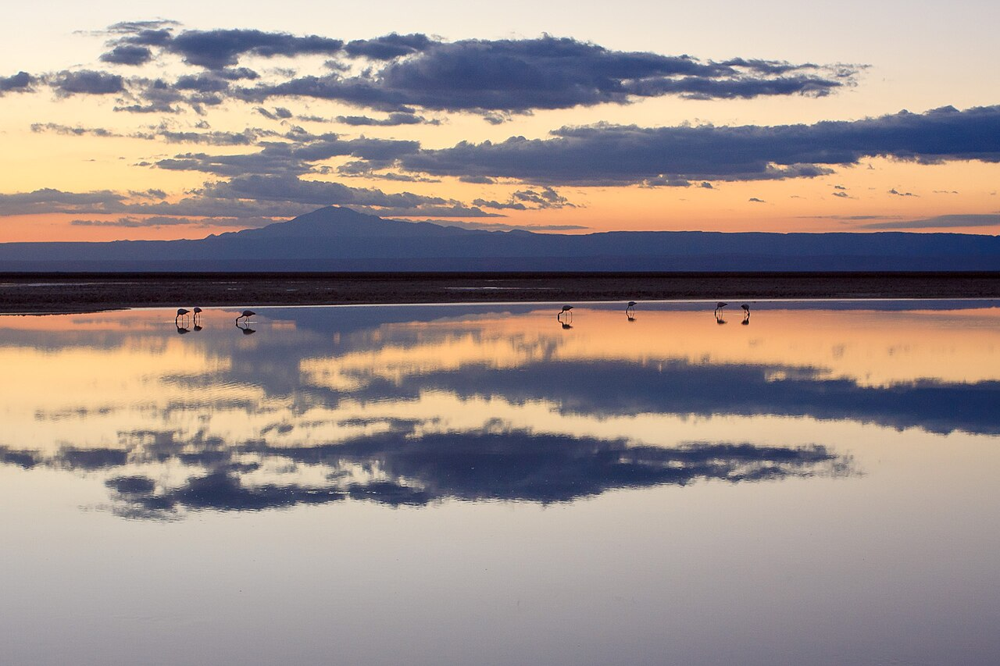

SALAR DE ATACAMA
The Saline Highland
The Salar de Atacama in northern Chile is the country’s largest salt flat, a dazzling expanse of desert lagoons framed by the Andes where three species of flamingos—Andean, Chilean, and James’s—nest and feed, making it a premier avitourism destination.